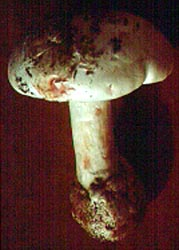
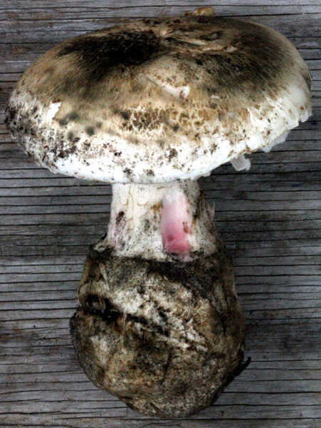
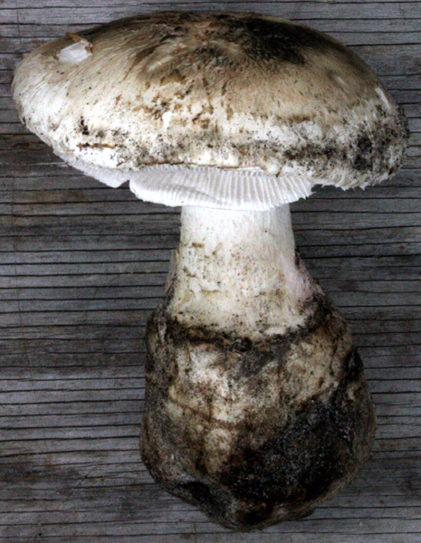
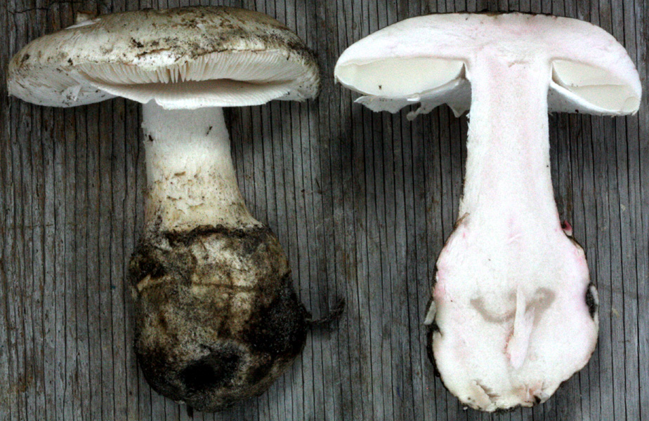
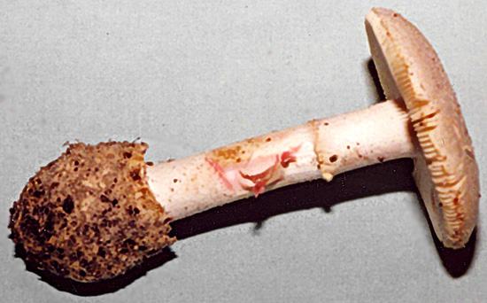

| name | Amanita mutabilis |
| name status | nomen acceptum |
| author | Beardslee |
| english name | "Anise And Raspberry Limbed-Lepidella" |
| images |
 1. Amanita mutabilis, southern New Jersey, U.S.A.  2. Amanita mutabilis, Franklin Parker Preserver, ca. Chatsworth, Burlington Co., New Jersey, U.S.A.  3. Amanita mutabilis, Franklin Parker Preserver, ca. Chatsworth, Burlington Co., New Jersey, U.S.A.  4. Amanita mutabilis, Franklin Parker Preserver, ca. Chatsworth, Burlington Co., New Jersey, U.S.A.  5. Amanita mutabilis, Lytle Pk., W. Palm Beach, Palm Beach Co., Florida, U.S.A. |
| cap |
Amanita mutabilis has a white to pale tan pileus 50 - 110 mm wide, that is flat and has a very broad, low umbo. The white flesh will turn from white to red or magenta if scratched. The volva may be present as an inconspicuous, membranous, white patch. |
| gills | The gills are free to narrowly adnate with lines descending onto the top of the stem, close, pale cream, bruising like the cap flesh. The short gills are sometimes absent; when present, they are very short, obliquely truncate, and sometimes merge with a neighboring gill. |
| stem |
Its stem (up to 130 × 22 mm excluding the bulb) is white and terminates below in a bulb (up to 80 × 50 mm) bearing a membranous, limbate volva. The annulus is skirt-like, attached near the top of the stem, and white to yellowish. All these parts are white at first, but the flesh will become red to magenta if scratched. |
| odor/taste | The odor is often distinctly of anise. |
| spores |
The spores measure (8.7-) 10.0 - 14.6 (-18.9) × (5.0-) 6.0 - 8.0 (-12.6) µm and are ellipsoid to elongate (rarely cylindric) and amyloid. Clamps are absent from the bases of basidia. When basidia are crushed, they often release granules that are dextrinoid. |
| discussion |
Before a specimen of A. mutabilis is handled, bruised, or smelled, it may suggest a robust specimen of the white destroying angels (sect. Phalloideae) in the field. Two striking characters of A. mutabilis are its odor and the staining of its context. When scratched, the flesh quickly turns the color of American raspberry sherbet. The odor (especially just as the collecting packet around a fresh specimen is opened) often is distinctly of anise. Odor alone is not a sufficient character for determining this mushroom because other species of Amanita in its geographic range also may smell of anise. This is a species of the pine-oak woods of the sandy, Atlantic coastal plain in the eastern United States. Its range extends from New Jersey to Florida and Texas. It has recenly been reported from Rhode Island. Bas placed A. mutabilis in his stirps Preissii (see the Australian species A. preissii (Fr.) Sacc.). It is interesting to compare A. mutabilis with another Australian species, A. rosea D.A. Reid.—R. E. Tulloss |
| brief editors | RET |
| name | Amanita mutabilis | ||||||||||||||||||||||||||||
| author | Beardslee 1919. J. Elisha Mitchell Scient. Soc. 34: 198. | ||||||||||||||||||||||||||||
| name status | nomen acceptum | ||||||||||||||||||||||||||||
| english name | "Anise And Raspberry Limbed-Lepidella" | ||||||||||||||||||||||||||||
| synonyms |
≡Venenarius mutabilis (Beardslee) Murrill. 1951. Bull. Fla. Agr. Exp. Stn. 478: 27.
=Venenarius abruptiformis Murrill. 1938. Mycologia 30: 360. ≡Amanita abruptiformis (Murrill) Murrill. 1938. Mycologia 30: 371. ≡Amidella abruptiformis (Murrill) E.-J. Gilbert. 1940. Iconogr. Mycol. (Milan) 27, suppl. (1): 77, tab. 23 (fig. 3).
=Venenarius anisatus Murrill. 1945c ["1944"]. Lloydia 7: 314. ≡Amanita anisata (Murrill) Murrill. 1945c ["1944"]. Lloydia 7: 327.
=Venenarius submutabilis Murrill. 1943. Mycologia 35: 428. ≡Amanita submutabilis (Murrill) Murrill. 1943. Mycologia 35: 433. The editors of this site owe a great debt to Dr. Cornelis Bas whose famous cigar box files of Amanita nomenclatural information gathered over three or more decades were made available to RET for computerization and make up the lion's share of the nomenclatural information presented on this site. | ||||||||||||||||||||||||||||
| etymology | mutabilis "changeable" | ||||||||||||||||||||||||||||
| MycoBank nos. | 445823, 255584, 284047, 284077 | ||||||||||||||||||||||||||||
| GenBank nos. |
Due to delays in data processing at GenBank, some accession numbers may lead to unreleased (pending) pages.
These pages will eventually be made live, so try again later.
| ||||||||||||||||||||||||||||
| holotypes |
A. abruptiformis—FLAS; isotypes, MICH & NY. A. anisata—FLAS. A. mutabilis—NCU; isotype, TENN. A. submutabilis—FLAS. | ||||||||||||||||||||||||||||
| type studies |
A. abruptiformis—Jenkins. 1979. Mycotaxon 10: 176. A. anisata—Ibid.: 177. A. submutabilis—Ibid.: 192. | ||||||||||||||||||||||||||||
| revisions |
Bas. 1969. Persoonia 5: 542, figs. 343-354. Tulloss. 1984. Mycologia 76: 555, figs. 1-3. | ||||||||||||||||||||||||||||
| intro |
The following text may make multiple use of each data field. The field may contain magenta text presenting data from a type study and/or revision of other original material cited in the protolog of the present taxon. Macroscopic descriptions in magenta are a combination of data from the protolog and additional observations made on the exiccata during revision of the cited original material. The same field may also contain black text, which is data from a revision of the present taxon (including non-type material and/or material not cited in the protolog). Paragraphs of black text will be labeled if further subdivision of this text is appropriate. Olive text indicates a specimen that has not been thoroughly examined (for example, for microscopic details) and marks other places in the text where data is missing or uncertain. The following material is derived from the protolog of the present taxon, the revisions of Bas (1969) and Tulloss (1984), Wolfe et al. (2012), and other original research of R. E. Tulloss and N. Goldman. | ||||||||||||||||||||||||||||
| pileus | (40-) 54 - 110 mm wide, pale tan to tannish cream to cream to near white, hemispheric to convex at first, then planar with very broad, low umbo, sometimes with 1 - 3 mm of sterile margin; context white, 12 - 13 mm thick at stipe and slowly and evenly thinning to a thin membrane for at most the last 10 mm of the radius, rapidly bruising raspberry sherbert pink when cut, fading to grayish-white after 24 h refrigeration; margin decurved, nonstriate, appendiculate; universal veil inconspicuous or as patches of concolorous to slightly darker to nearly black, very thin, submembranous to radially fibrillose volval material. | ||||||||||||||||||||||||||||
| lamellae | free to narrowly adnate with decurrent lines on stipe, cream in mass, pale cream in side view, bruising as in cap context, 9.5 - 14 mm broad, close to subcrowded (about 1 mm apart at margin), on drying turning pale orange (5A3) to orange white (6A2) to grayish orange (6B4) to Venetian Red (8D8) to Fox (8D7) to reddish brown (8D6) to cream (4A3) to grayish orange (5B4-5); lamellulae truncate to subtruncate to obliquely truncate, dominantly at margin, occasionally distant from margin, often of diverse lengths (sometimes all rather short), often plentiful (sometimes absent from some sectors) sometimes anastomosing to lamellae, infrequently exhibiting double-two-ranked reversed forking. | ||||||||||||||||||||||||||||
| stipe | 40 - 100 (-130) x 10 - 22 mm, whitish, dense floccose below annulus; context solid, white, bruising as in pileus and lamellae (one Florida specimen bruising Begonia Rose in 5 - 10 sec.), with floccose material sometimes becoming brown with age; bulb 22 - 52 (-80) × (20-) 24 - 46 (-50) mm, globose to subglobose to ovoid; partial veil white to yellowish, apical to superior, membranous, skirt-like, radially striate above, floccose below, with sawtooth edge, becoming appressed to stipe, fibrils of stipe adhering to underside at times (in one Florida specimen); universal veil as very short-limbate volva, submembranous to membranous, with distance from base of bulb to highest point on limb 29 - 49 mm, with interior of limb bruising pinkish strongly even after 24 h refrigeration. | ||||||||||||||||||||||||||||
| odor/taste | Odor strongly of anise (in this case, retained for months after drying) or odorless or sometimes oily. Taste not recorded. | ||||||||||||||||||||||||||||
| macrochemical tests |
95% ethanol - accelerates normal pink bruising reaction, otherwise negative. 10% KOH on pileus - negative. Spot test for laccase (syringaldazine) - accelerates normal pink bruising reaction, otherwise negative (probably due to solvent—ethanol). Spot test for tyrosinase (paracresol) - intensifies and accelerates normal pink bruising reaction. Test voucher: Tulloss 7-15-87-A. | ||||||||||||||||||||||||||||
| pileipellis | Bas (1969): rather thick, yellow in alkaline solution, not or slightly gelatinizing at surface; filamentous hyphae 3 - 6 (-10) μm wide, interwoven to subradially arranged. | ||||||||||||||||||||||||||||
| basidia | Often releasing dextrinoid granules when broken. | ||||||||||||||||||||||||||||
| lamella edge tissue | sterile. | ||||||||||||||||||||||||||||
| basidiospores |
from revision of Bas (1969): [110/8/4] (10.0-) 11.0 - 13.5 (-14.5) × (5.5-) 6.0 - 8.5 (-9.0) μm,
(Q = 1.40 - 2.20; Q = 1.55 - 1.95),
smooth, thin-walled, amyloid (sometimes obscured by color of contents in fresh mounts), ellipsoid to elongate, rarely cylindric; apiculus not described; contents refractive, nearly colorless to golden yellow (yellow-brown to red-brown in fresh mounts in Melzer's Reagent); pure white in deposit. from type study of Amanita abruptiformis by Jenkins (1979): [-/-/1] 11.7 - 14.1 × 7.0 - 7.8 μm, (Q = 1.67 - 1.81; Q' = 1.77), hyaline, thin-walled, yellowish-brown to weakly amyloid, elongate, often adaxially flattened; apiculus sublateral, cylindric; contents guttulate. from type study of Amanita anisata by Jenkins (1979): [-/-/1] 10.9 - 11.7 (-12.1) × 6.2 - 7.0 (-7.8) μm, (Q = 1.50 - 1.84; Q' = 1.74), hyaline, thin-walled, yellowish to weakly amyloid, ellipsoid to elongate, often adaxially flattened; apiculus sublateral, cylindric; contents guttulate. from type study of Amanita submutabilis by Jenkins (1979): [-/-/1] 13.3 - 14.1 (-14.8) × 6.2 - 7.8 μm, (Q = 1.81 - 2.15; Q' = 1.98), hyaline, thin-walled, amyloid, elongate to cylindric, often adaxially flattened; apiculus sublateral, cylindric; contents guttulate; color in deposit not recorded. composite of data from all material revised by RET and NG: [235/11/10] (8.7-) 10.0 - 14.6 (-18.9) × (5.0-) 6.0 - 8.0 (-12.6) µm, (L = 11.0 - 13.1 (-13.8) µm; L’ = 12.0 µm; W = 6.6 - 7.6 (-8.3) µm; W’ = 7.0 µm; Q = (1.30-) 1.50 - 1.90 (-2.13); Q = 1.60 - 1.78 (-1.89); Q’ = 1.71), colorless, hyaline, smooth, thin-walled, amyloid, ellipsoid to elongate to cylindric, adaxially flattened, occasionally swollen at one end; apiculus sublateral, cylindric; contents monoguttulate in 3% KOH, sometimes including dextrinoid granules in Melzer’s Reagent; white in deposit. | ||||||||||||||||||||||||||||
| ecology | Solitary to gregarious. Florida: Under P. taeda(?) or under Q. virginiana and P. elliottii. Mississippi: ??. New Jersey: In sandy soil in typical pine-oak barrens—with P. rigida and Quercus spp. and occasional Sassafras albidum. Texas: ??. | ||||||||||||||||||||||||||||
| material examined |
from the revision of Bas (1969):
U.S.A.:
NORTH CAROLINA—Carteret Co. - Smyrna, Davis Isl., from type study of from type study of Amanita abruptiformis by Jenkins (1979): U. S. A.: FLORIDA— Alachua Co. - Gainesville, 9-23.viii.1937 W. A. Murrill F 16048 (holotype, FLAS). from type study of Amanita anisata by Jenkins (1979): U. S. A.: FLORIDA— Alachua Co. - Gainesville, 25.vi.1938 W. A. Murrill F 16364 (holotype, FLAS). from type study of Amanita submutabilis by Jenkins (1979): U. S. A.: FLORIDA— Alachua Co. - Burnett's Lake, 24.ix.1941 W. A. Murrill F 20004 (holotype, FLAS). U.S.A.: DELAWARE—Sussex Co. - W of Rehoboth Beach, ca. Rte. 404 [ca. 38.7227° N/ 75.2014° W, ca. 3 m] 22.viii.2012 Martin Livezey s.n. [mushroomobserver.org 106477] (RET 579-5). FLORIDA—Brevard Co. - Melbourne, 10.xi.1984 Aaron Norarevian & E. Yetter s.n. [Tulloss 11-10-84-#9] (RET 233-5). Highlands Co. - Highlands Hammock St. Pk. [27°27'55" N/ 81°33'00" W, 24 m], 29.vii.1981 H. E. Barnhart 81-17 (RET 338-8). Palm Beach Co. - W. Palm Beach, Lytel Pk., 28.ix.1998 Hanna L. Tschekunow s.n. (RET 288-7), vii.2000 H. L. Tschekunow s.n. (RET 314-6), ix.2000 H. L. Tschekunow s.n. (RET 319-9). Sarasota Co. - Sarasota Lakes, 18.vii.1980 Harley E. Barnhart 80-1 (RET 339-1). Wakulla Co. - ca. Crawfordville, The Boneyard, 8.vii.1994 David P. Lewis 5314 (RET 285-3). LOUISIANA—Unkn. Parish - unkn. loc. [NAMA2009 foray], 27.xi.2009 coll. unkn. s.n. [Tulloss 11-27-09-A] (RET 457-3). MISSISSIPPI—Harrison Co. - Long Beach, Univ. S. Mississippi, Gulf Park campus [30°21'11" N/ 89°08'17" W, 6 m], 15.vii.1987 D. T. Jenkins s.n. [Tulloss 7-15-87-A] (in herb. David T. Jenkins, Univ. Alabama, Birmingham; RET ??). NEW JERSEY—Burlington Co. - ca. Chatsworth, Franklin Parker Preserve, ca. north ("airport") gate [39°48'48" N/ 74°32'52" W, 27 m], 3.x.2010 Nina Burghardt et al. s.n. (RET 451-4), 19.viii.2011 Nina Burghardt et al. s.n. (RET 486-4), 14.x.2012 R. E. Tulloss 10-14-12-A (RET 518-9), John & Nina Burghardt s.n. [Tulloss 10-14-12-F] (RET 519-2); ca. Chatsworth, Franklin Parker Preserve, unkn. loc., n.d. Nina Burghardt et al. s.n. (RET 580-6), 31.viii.2012 Nina Burghardt et al. s.n. (RET 585-3). Middlesex Co. - Jamesburg Twp., Jamesburg Twp. Pk., ca. Helmetta [40°23’07” N/ 74°25’48” W], 18.viii.1983 R. E. Tulloss 8-18-83-C (RET 105-7), -D (RET 105-8), 3.ix.1983 D. C. & R. E. Tulloss 9-3-83-G (RET 469-8). Ocean Co. - Lakehurst, sand rd. off Rte. 70 ca. Rte. 37 circle, 7.ix.1981 M. A. King & R. E. Tulloss 9-7-81-D (RET 164-10), 10.ix.1981 R. E. Tulloss 9-10-81-A (RET ??), 9-10-81-B (RET 164-8), 13.ix.1981 M. A. King & R. E. Tulloss 9-13-81-A (RET 164-9), 11.ix.1982 R. E. Tulloss 9-11-82-N (RUTPP), 9-11-82-O (NY). TEXAS—Liberty Co. - Cleveland, Retreat at Artesian Lakes | ||||||||||||||||||||||||||||
| discussion |
The off-white coloring, pink-bruising, rather squat habit, lack of reaction with KOH, and, if present, anise odor separate this entity from the white "destroying angels" of Amanita sect. Phalloideae. The intensity of the bruising reaction, the lack of browning of volval material on the pileus, the true bulb at the stipe base, and the odor serve to separate the species from those near A. volvata and A. peckiana in sect. Amidella. While it is not the case with the collections RET has examined, Bas (1969) does note that staining may be restricted to the base of the bulb or be absent. Amanita mutabilis may be found in sandy soil of the Atlantic Coastal Plain from New Jersey to Florida in scrubby pine-oak woods such as are characteristic of the New Jersey Pine Barrens. This suggests that the mushroom might be expected in similar sites on Long Island and Cape Cod. The species is found also in the coastal plain of the Gulf of Mexico from Florida to Texas. The dextrinoid granules seen in mounts of many specimens were used by Bas to create a key separating the four forms distinguished by Murrill on the grounds that they might indeed be taxonomically distinct. Bas associated the presence of the granules with an oily smell and the absence of granules with an anise-like odor. The observations of Tulloss (1984), however, indicate there is no correlation between odor and the presence or absence of dextrinoid granules and give support to Bas’ contention that the three species described by Murrill are synonymous with A. mutabilis. The bruising/staining reaction seems to be markedly slowed in cool autumn weather (Oct. 2010 collection, Burlington, NJ). The first use of the modern sporograph appeared in relation to the present species (Tulloss 1984, pdf available here). | ||||||||||||||||||||||||||||
| citations | —R. E. Tulloss and N. Goldman | ||||||||||||||||||||||||||||
| editors | RET | ||||||||||||||||||||||||||||
Information to support the viewer in reading the content of "technical" tabs can be found here.
| name | Amanita mutabilis |
| bottom links |
[ Section Lepidella page. ] [ Amanita Studies home. ] [ Keys & Checklists ] |
| name | Amanita mutabilis |
| bottom links |
[ Section Lepidella page. ] [ Amanita Studies home. ] [ Keys & Checklists ] |
Each spore data set is intended to comprise a set of measurements from a single specimen made by a single observer; and explanations prepared for this site talk about specimen-observer pairs associated with each data set. Combining more data into a single data set is non-optimal because it obscures observer differences (which may be valuable for instructional purposes, for example) and may obscure instances in which a single collection inadvertently contains a mixture of taxa.

Text and User-Generated Sporographs are published under the Creative Commons License.

In the case of a taxon page, image credits are on the 'image' tab.
{kind=link}
{kind=link}
{kind=link}
{kind=link}
{kind=link}
{kind=link}